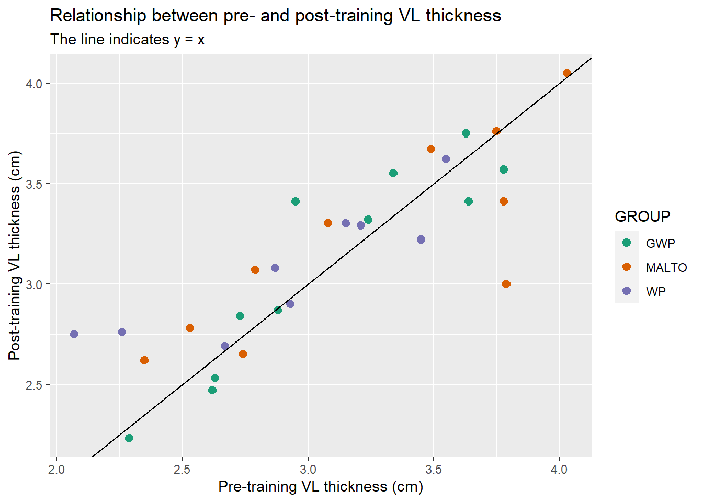
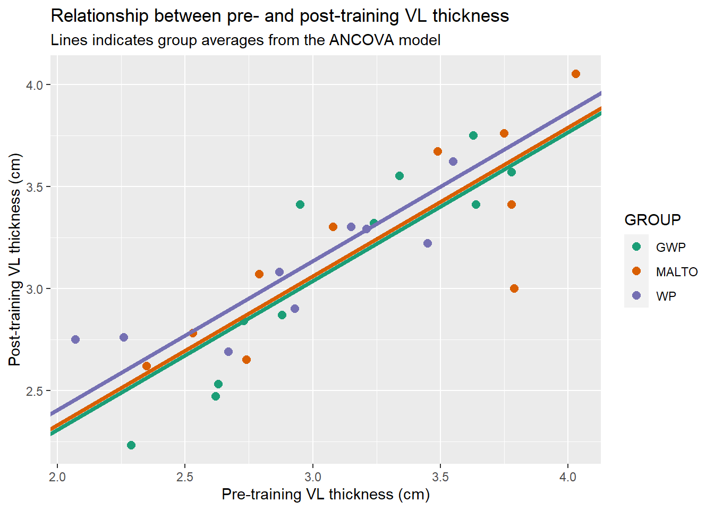

Read Haun et al. (Haun et al. 2018) and find the main purpose/aim/hypothesis of the study.
How do they motivate their purpose/aim/hypothesis?
What is the statistical test used test the main hypotheses?
Make it simple!
Design an analysis of the data from Haun et al. (2018):
Include only two time-points (T1 and T3)
Select one measure of muscle hypertrophy
Select a test for a null-hypothesis significance test
Do your results correspond to what is found in Haun et al. (2018)?
A possible solution
We will start by exploring the data, we will use the VL (vastus lateralis thickness) data to answer the question if protein supplementation affects training outcomes. Data exploration could mean that we plot the data and include information on groups etc.
The plot below shows the relationship between pre- and post-intervention values with groups indicated by different colors. Points above the line indicates that a participant has greater values after the intervention. Points below the identity line indicates that participants have a negative development pre- to post-intervention.
Code
library(exscidata); library(tidyverse)data("hypertrophy")# For plotting we will set a color scale col_scale <-c("#1b9e77", "#d95f02", "#7570b3")hypertrophy %>%select(PARTICIPANT, GROUP, VL_T1, VL_T3) %>%ggplot(aes(VL_T1, VL_T3, color = GROUP)) +geom_point(size =2.5) +geom_abline(intercept =0, slope =1) +scale_color_manual(values = col_scale) +labs(title ="Relationship between pre- and post-training VL thickness", subtitle ="The line indicates y = x",x ="Pre-training VL thickness (cm)", y ="Post-training VL thickness (cm)")

A simple model would be an extension of the above plot. Accounting for the relationship between pre- and post-intervention values, what is the difference between groups at post-intervention. This question can be answered with an ANCOVA. We will start by fitting the model:
Code
#| echo: true#| message: false#| warning: false# Save the data setdat <- hypertrophy %>%select(PARTICIPANT, GROUP, VL_T1, VL_T3)# Fit the modelm1 <-lm(VL_T3 ~ VL_T1 + GROUP, data = dat)# Plot all diagniostic plots in a single plotpar(mfrow =c(2, 2)) plot(m1)
Code
par(mfrow =c(1,1)) # resets the plot window
The diagnostic plots shows no obvious patterns in the residual vs. fitted plots (left column), the residuals might be slightly deviating from a normal distribution (top right) and no data point falls outside the Cook’s distance indicating that no single data point influences the fit to large degree (bottom right).
We may now extract the model coefficients. We will start by plotting them in a graph.
Code
hypertrophy %>%select(PARTICIPANT, GROUP, VL_T1, VL_T3) %>%ggplot(aes(VL_T1, VL_T3, color = GROUP)) +geom_point(size =2.5) +scale_color_manual(values = col_scale) +geom_abline(intercept =coef(m1)[1], slope =coef(m1)[2], color = col_scale[1], size =1.5) +geom_abline(intercept =coef(m1)[1] +coef(m1)[3] , slope =coef(m1)[2], color = col_scale[2], size =1.5) +geom_abline(intercept =coef(m1)[1] +coef(m1)[4], slope =coef(m1)[2], color = col_scale[3], size =1.5 ) +labs(title ="Relationship between pre- and post-training VL thickness", subtitle ="Lines indicates group averages from the ANCOVA model",x ="Pre-training VL thickness (cm)", y ="Post-training VL thickness (cm)")

Each line in the plot above indicate group averages in post scores given pre-intervention scores. The vertical distance between lines indicate the differences between groups.
has an intercept \(\beta_0\) that corresponds to the post-intervention values when all coefficients are set to 0 (all \(X = 0\)). The slope \(\beta_1X_1\) is the pre-intervention values and \(\beta_2X_2\) and \(\beta_3X_3\) are group indicators (\(X_2 = 1\) indicates group = MALTO, \(X_3 = 1\) indicates group = WP) giving the differences between MALTO and WP to the reference level GWP.
Inspecting the summary gives supports what the figure already shows, that there are no great differences between groups in post-intervention values:
Code
summary(m1)
Call:
lm(formula = VL_T3 ~ VL_T1 + GROUP, data = dat)
Residuals:
Min 1Q Median 3Q Max
-0.63728 -0.20006 0.03602 0.16346 0.40851
Coefficients:
Estimate Std. Error t value Pr(>|t|)
(Intercept) 0.84974 0.27620 3.077 0.00488 **
VL_T1 0.72940 0.08687 8.396 7.06e-09 ***
GROUPMALTO 0.02309 0.10676 0.216 0.83046
GROUPWP 0.09790 0.10969 0.892 0.38033
---
Signif. codes: 0 '***' 0.001 '**' 0.01 '*' 0.05 '.' 0.1 ' ' 1
Residual standard error: 0.2421 on 26 degrees of freedom
(1 observation deleted due to missingness)
Multiple R-squared: 0.7379, Adjusted R-squared: 0.7076
F-statistic: 24.4 on 3 and 26 DF, p-value: 1.004e-07
Haun et al. (2018) used delta-scores (or change-scores) to answer their question. Instead of modelling the post-values we could model the change. We will start by exploring the relationship between the baseline and change. We will then fit a model on change scores.
Code
#| echo: true#| message: false#| warning: falsehypertrophy %>%select(PARTICIPANT, GROUP, VL_T1, VL_T3) %>%mutate(change = VL_T3 - VL_T1) %>%ggplot(aes(VL_T1, change, color = GROUP)) +geom_point(size =2.5) +scale_color_manual(values = col_scale) +geom_smooth(aes(color =NULL), method ="lm", se =FALSE, color ="black") +labs(title ="Relationship between pre- and change scores of VL thickness", subtitle ="The line indicates the linear relationship between baseline and change",x ="Pre-training VL thickness (cm)", y ="Pre- to Post-training VL thickness (cm change)")
The regression line indicates that there is a negative relationship between baseline and change score values. This is something we should consider when comparing groups. Again, an ANCOVA model will make a correction for this relationship. Any imbalance between groups at baseline will be accounted for by modelling the relationship between baseline and change.
Inspecting the diagnostics plots gives us no reason for big concerns regarding the model fit (except maybe for the Q-Q plot). We may will proceed with the model summary. Like before we will plot the model estimates over the raw data.
Code
#| echo: true#| message: false#| warning: falsehypertrophy %>%select(PARTICIPANT, GROUP, VL_T1, VL_T3) %>%mutate(change = VL_T3 - VL_T1) %>%ggplot(aes(VL_T1, change, color = GROUP)) +geom_point(size =2.5) +scale_color_manual(values = col_scale) +geom_abline(intercept =coef(m2)[1], slope =coef(m2)[2], color = col_scale[1], size =1.5) +geom_abline(intercept =coef(m2)[1] +coef(m2)[3] , slope =coef(m2)[2], color = col_scale[2], size =1.5) +geom_abline(intercept =coef(m2)[1] +coef(m2)[4], slope =coef(m2)[2], color = col_scale[3], size =1.5) +labs(title ="Relationship between pre- and change scores of VL thickness", subtitle ="The line indicates the linear relationship between baseline and change",x ="Pre-training VL thickness (cm)", y ="Pre- to Post-training VL thickness (cm change)")
Similarly to the model of raw post-intervention values, the vertical difference between groups are similar. Making tables of the two model indicates that the estimated differences between groups are the same irrespective if we modeled change scores or raw data.
Haun et al. (2018) used three time-points (T1, T2 and T3), for the three groups. In Figure 5 results from an ANCOVA on change scores is presented.
Let’s see if we can replicate the results. We will start by recreating the lower panel of figure 5B. It turns out that the summary values from each of the group/time-point combinations correspond when complete cases are used.
Code
library(ggtext) # used to get the plotting more accuratehypertrophy %>%select(PARTICIPANT, GROUP, VL_T1, VL_T2, VL_T3) %>%filter(complete.cases(.)) %>%pivot_longer(names_to ="time", values_to ="thickness", cols = VL_T1:VL_T3) %>%group_by(time, GROUP) %>%summarise(m =mean(thickness, na.rm =TRUE), s =sd(thickness, na.rm =TRUE), n =n()) %>%mutate(sum_stat =paste0(round(m,2), "<br>(", round(s, 2), ")<br>n = ", n), GROUP =factor(GROUP, levels =c("MALTO", "WP", "GWP"))) %>%ggplot(aes(time, m)) +geom_errorbar(aes(ymin = m, ymax = m + s)) +geom_bar(stat ="identity") +geom_richtext(aes(label = sum_stat), nudge_y =1.2) +facet_wrap(~ GROUP, ncol =3) +scale_y_continuous(limits =c(0, 5))
The results of the ANCOVA model in Figure 5B indicates that both mid (T2) and (T3) values are used in the same model. The raw change score data is plotted in the upper panel of Figure 5B. We recreate the plot below.
The model may be fitted using the lmer function from lme4. We do this since the data are correlated (as long as we use more than a single data point from each participant.)
Code
library(lmerTest); library(emmeans) # fit the modelm3 <-lmer(change ~ VL_T1 + time + time:GROUP + (1|PARTICIPANT), data = dat3)anova(m3)
Type III Analysis of Variance Table with Satterthwaite's method
Sum Sq Mean Sq NumDF DenDF F value Pr(>F)
VL_T1 0.14110 0.141101 1 26.00 9.0795 0.005699 **
time 0.06962 0.069620 1 27.00 4.4799 0.043657 *
time:GROUP 0.03246 0.008115 4 26.49 0.5222 0.720223
---
Signif. codes: 0 '***' 0.001 '**' 0.01 '*' 0.05 '.' 0.1 ' ' 1
Code
summary(m3)
Linear mixed model fit by REML. t-tests use Satterthwaite's method [
lmerModLmerTest]
Formula: change ~ VL_T1 + time + time:GROUP + (1 | PARTICIPANT)
Data: dat3
REML criterion at convergence: -8.3
Scaled residuals:
Min 1Q Median 3Q Max
-1.7778 -0.4112 0.0134 0.4648 1.4522
Random effects:
Groups Name Variance Std.Dev.
PARTICIPANT (Intercept) 0.03684 0.1919
Residual 0.01554 0.1247
Number of obs: 60, groups: PARTICIPANT, 30
Fixed effects:
Estimate Std. Error df t value Pr(>|t|)
(Intercept) -0.083687 0.073373 34.564048 -1.141 0.2619
VL_T1 -0.228386 0.075794 26.000000 -3.013 0.0057 **
timeT3 0.118000 0.055750 27.000000 2.117 0.0437 *
timeT2:GROUPWP 0.004359 0.108030 34.315981 0.040 0.9680
timeT3:GROUPWP 0.088581 0.108030 34.315981 0.820 0.4179
timeT2:GROUPGWP -0.002603 0.100797 34.674312 -0.026 0.9795
timeT3:GROUPGWP -0.016057 0.100797 34.674312 -0.159 0.8744
---
Signif. codes: 0 '***' 0.001 '**' 0.01 '*' 0.05 '.' 0.1 ' ' 1
Correlation of Fixed Effects:
(Intr) VL_T1 timeT3 tT2:GROUPW tT3:GROUPW tT2:GROUPG
VL_T1 -0.164
timeT3 -0.380 0.000
tT2:GROUPWP -0.698 0.229 0.258
tT3:GROUPWP -0.502 0.229 -0.258 0.719
tT2:GROUPGW -0.729 0.125 0.277 0.510 0.367
tT3:GROUPGW -0.519 0.125 -0.277 0.367 0.510 0.708
The ANOVA table do not correspond to the published values:
Code
library(knitr)# get the global p-valuesdata.frame(anova(m3)) %>%mutate(term =row.names(.)) %>%select(term, Pr..F.) %>%kable(col.names =c("Term", "P-value"))
# A tibble: 93 x 4
PARTICIPANT GROUP time thickness
<chr> <chr> <chr> <dbl>
1 MRV001 WP VL_T1 NA
2 MRV001 WP VL_T2 2.99
3 MRV001 WP VL_T3 3.45
4 MRV002 WP VL_T1 2.93
5 MRV002 WP VL_T2 2.7
6 MRV002 WP VL_T3 2.9
7 MRV003 GWP VL_T1 3.34
8 MRV003 GWP VL_T2 3.34
9 MRV003 GWP VL_T3 3.55
10 MRV004 GWP VL_T1 2.63
# ... with 83 more rows
Code
m4 <-lmer(thickness ~ time * GROUP + (1|PARTICIPANT), data = dat4)pairs(emmeans(m4, specs =~ time), reverse =TRUE)
contrast estimate SE df t.ratio p.value
VL_T2 - VL_T1 -0.0857 0.0425 55.1 -2.017 0.1176
VL_T3 - VL_T1 0.0645 0.0425 55.1 1.519 0.2900
VL_T3 - VL_T2 0.1502 0.0419 55.0 3.586 0.0020
Results are averaged over the levels of: GROUP
Degrees-of-freedom method: kenward-roger
P value adjustment: tukey method for comparing a family of 3 estimates
Haun, C. T., C. G. Vann, C. B. Mobley, P. A. Roberson, S. C. Osburn, H. M. Holmes, P. M. Mumford, et al. 2018. “Effects of GradedWheySupplementationDuringExtreme-VolumeResistanceTraining.”Front Nutr 5: 84. https://doi.org/10.3389/fnut.2018.00084.